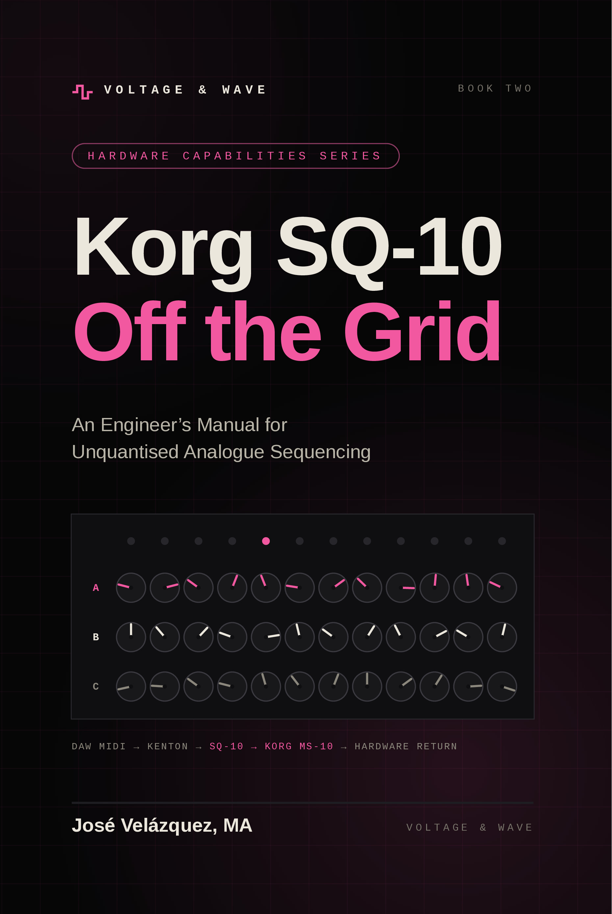

Bring true 1978 analogue warmth, grit, and unquantised sequencing to your sterile digital tracks. No plugins. No presets. Just pure voltage.
AN ENGINEER'S MANUAL FOR ANALOGUE RE-AMPING
Digital in. Analogue character out. Route clean digital stems through the Korg MS-10's analogue signal path (VCA, Korg-35 filter, envelope generator, modulation generator and patchbay) and get them back saturated, moving, gated or snapped. A working engineer's manual: repeatable procedures, not one-off recipes.

Unquantised analogue step-sequencing and MIDI-to-CV translation.
The Complete Voltage & Wave Studio Manual for the Korg MS-10 and SQ-10.
Korg, MS-10, SQ-10 and VC-10 are trademarks of Korg Inc. Named here descriptively; no affiliation or endorsement implied.
Modern software synthesisers are incredibly precise, but they lack the unpredictable behaviour and colouration of physical electricity.
We offer an exclusive analogue bridge for producers who want the aggressive, squelching filters and natural swing of vintage 1970s Korg hardware, without the maintenance or the massive price tag.
Your MIDI and audio stems are physically routed through our studio, sculpted by hand, and captured back into pristine 24-bit digital audio.
Behind the Voltage & Wave Project
ARCHITECT & SIGNAL ENGINEER
José Velázquez is a London-based software architect, multimedia producer, and archivist. Over the last 20 years, he has led projects for the BBC, IBM, and Google, working across both software engineering and creative media. With a background in BBC broadcast operations and an MA in Documentary Research, José manages the engineering and signal flow at Voltage & Wave, handling the studio's analogue re-amping and hardware sequencing. His interest in electronica also extends to custom code, developing experimental, open-source Web Audio tools—including browser-based synthesisers and sequencers inspired by vintage hardware.
VIEW JOSE'S OPEN-SOURCE AUDIO TOOLSRESIDENT ARTIST & COMPOSER
An accomplished electronic artist and instrumentalist from Spain, Simon brings deep musicality and emotion to the studio's raw voltage. Known for his captivating live performances, his original compositions blend vintage analogue synthesisers with organic pianos, cinematic strings, and progressive arrangements. Within Voltage & Wave, Simon is the musical ear guiding the machinery. He ensures that every translated sequence, filter sweep, and unquantised bassline isn't just a technical process, but a deeply expressive, human performance.
VIEW SIMON'S WORK ON SOUNDCLOUDSelect your processing path
YOUR DIGITAL AUDIO, DRIVEN THROUGH PHYSICAL CIRCUITS.
Send us your flat basslines, drums, or soft-synth stems. We will route them through the legendary, aggressive resonant low-pass filters of our vintage Korg MS-10 or Behringer K-2. Whether you want subtle harmonic warmth or brutal, overdriven EBM distortion, we tweak the VCAs and filters in real-time to breathe life into your tracks.
BREAKING THE DIGITAL GRID WITH UNQUANTISED SWING.
Digital metronomes can feel lifeless. Send us your MIDI melodies, and we will manually translate them onto our 1978 Korg SQ-10 analogue sequencer by ear. Because the SQ-10 uses continuous voltage rather than quantised steps, your basslines will gain a natural, drifting, human groove that software simply cannot synthesise.
DIAGNOSTICS IN PROGRESS // CARRIER SIGNAL LOST.
The Korg VC-